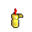
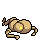
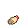
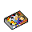
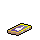
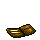
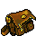
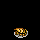

| 名前 | 買/売 | 説明 | 床の抽選に出ない品の入手条件 | 版 | |
|---|---|---|---|---|---|
 | ポルポのライター | 100/50 | 入団テストに使うポルポのライターだ 信頼を試すぞ | 床の抽選には出ない。ブラック・サバスを倒したとき 1/10 のうち 1/2 で落とす（外れた側は聖なる弓矢） | 0.13 |
 | コピー人形の破片 | 100/50 | コピー人形の破片だ | 床の抽選には出ない。コピー人形を倒したときに落とす（レクイエム・ジョルノのコピー人形でも落ちる） | 0.13 |
 | 彼女の手首 | 100/50 | 手首だ | 床の抽選には出ない。床のサンジェルマンの紙袋（食料入れ）の中身のピッツァ枠にだけ混ざる（ピッツァ枠のうち彼女の手首は3.5%） | 0.13 |
| シーザーのバンダナ | 100/50 | シーザーの残したバンダナだ | 床の抽選には出ない。鮮血のシャボンの中に最初から入っている（イベントの入れ物） | 0.13 | |
| オレッちのコート | 100/50 | ヤク中のゴロツキが大事にしているコートだ 持っていると危険だぞ | 床の抽選には出ない。ヤク中のゴロツキを倒したとき 1/10 で落とす | 0.13 | |
 | GP BOY | 390/195 | 特に何も起こらないぞ | 床の抽選には出ない。間田を倒したとき 1/2 で落とす（残りはコミックス） | 0.13 |
| 点滴 | 500/250 | ブドウ糖とビタミン栄養剤の点滴だ 満腹度が30回復するぞ | 床の抽選には出ない。ハイウェイ・スターを倒したとき 1/10 で落とす | 0.13 | |
| 盗まれた財布 | 500/250 | 玉美がカツアゲした財布だ。 お金が入っているように見えるぞ。 | 床の抽選には出ない。お金を盗んだ敵を倒したとき、盗まれた額の財布として落とす | 0.13 | |
| 聖なる弓矢 | 1000/500 | 装備中のDISCの合成容量が１増えるぞ | 0.13 | ||
| 吉良の弓矢 | 1000/500 | 装備中のDISCに新たな能力が増えるぞ | 入手経路が見当たらない（床の抽選・店・敵の落とし物のどれにも設定が無い） | 0.13 | |
| ときのがくぼう | 1000/500 | ５ターン 時を止められるぞ | 床の抽選には出ない。承太郎を倒したとき 1/10 で落とす | 0.13 | |
| 鉄球 | 1000/500 | このフロアで射撃ダメージを少なくするぞ 投げると８０のダメージを与えるぞ | 0.13 | ||
| ゾンビ馬 | 1000/500 | 体力が完全回復するぞ | 0.13 | ||
| 魔法のランプ | 1500/750 | 願いを叶えてくれるランプだ | 0.13 | ||
| 石仮面 | 1500/750 | 吸血鬼体質になる仮面だ 体力が急速に回復するようになるぞ | 0.13 | ||
 | ベルトのバックル | 1500/750 | タスクACT1を装備して使うと変化するぞ | 0.15 | |
| 紫外線照射装置 | 2000/1000 | 部屋全体に紫外線を照射するぞ 吸血鬼やゾンビを消滅させるぞ | 0.13 | ||
| 恐竜の化石 | 2000/1000 | スピノサウルスの化石だ。使うと危険だぞ。 持っていると一巡後の世界に変化があるぞ | 床の抽選には出ない（0.16）。一巡後の世界で、警備員の西戸を倒したとき 1/3 で落とす | 0.16 | |
| 赤石つき石仮面 | 2000/1000 | 究極生物体質になる仮面だ。レクイエムの大迷宮を 特定条件でクリアすると出現しはじめるぞ。 | 床のコミックス枠で石仮面が出たとき、真のエンディングを見たあとに限り 1/2 でこれに置き換わる（石仮面の確率の一部） | 0.13 | |
 | 吉良の財布 | 2000/1000 | こいつはプレゼントか～～？ もらっておいてやるぜ……オジサン | 床の抽選には出ない。吉良吉影が落とす | 0.13 |
| ごま蜜団子 | 2700/1350 | 押すと満腹度が10回復するぞ 前方のキャラクターが盲目になるぞ | 0.15 | ||
 | 大家のカバン | 3000/1500 | 大金が入ってそうなカバンだ。 | 床の抽選には出ない。川尻浩作がお金を奪って持っているとき、倒すと確実に落とす（金額つき） | 0.13 |
| やばいクスリ | 10000/5000 | 高値で取引されているブツだ 体力が全回復するが混乱するぞ | 床の抽選には出ない。チョコラータの上半身を倒したとき 1/20、ヤク中の少年を倒したとき確実に落とす | 0.13 | |
| マフラー | 10000/5000 | サティポロジァ・ビートルの腸の筋を 3万匹分乾かして作ったものだぞ | 床の抽選には出ない。リサリサ・ストレイツォを倒したとき 1/20 のうち 1/9 で落とす（0.16） | 0.15 | |
 | ペンダント | 20000/10000 | お守り 中に小さな石が入っている | どこにも出ない。床・店・敵の落とし物・入れ物のどれにも無い（0.16-10 のデータ上の存在のみ） | 0.16 |
| 無線機 | 50000/25000 | GD.st刑務所の無線機だ ウェザーと繋がっているようだぞ | 0.16 |